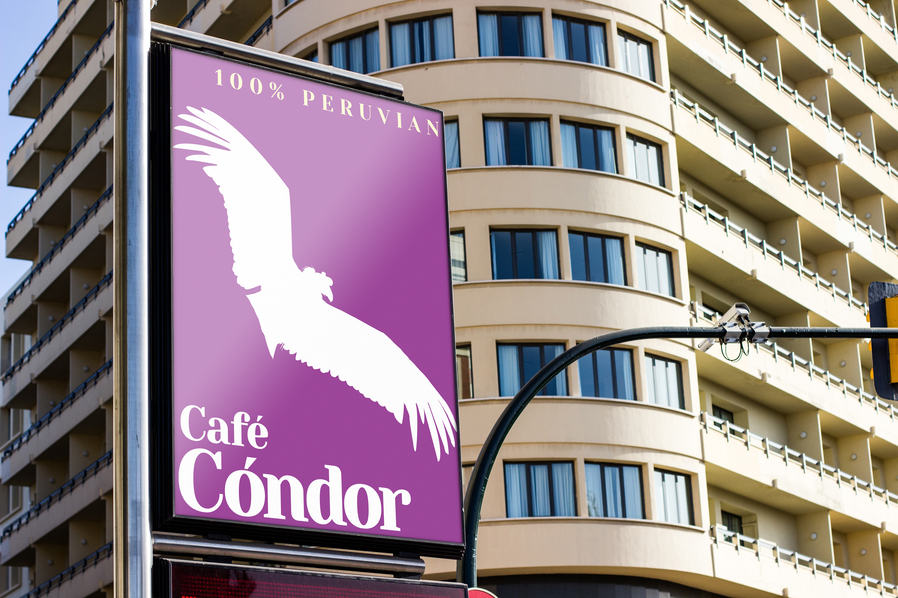

Branding - Graphic Design I, SCCC - 2022
Fictional Brand: Cafe Condor


Cafe Condor is an Identity System I developed for my Graphic Design I class at SCCC (Fall 2022). I chose coffee as the product and supporting Andean farmers as the premise of the brand. The logo features the Andean Condor to communicate the grandness of Peruvian coffee and culture. The identity system was made in InDesign as a PDF document.